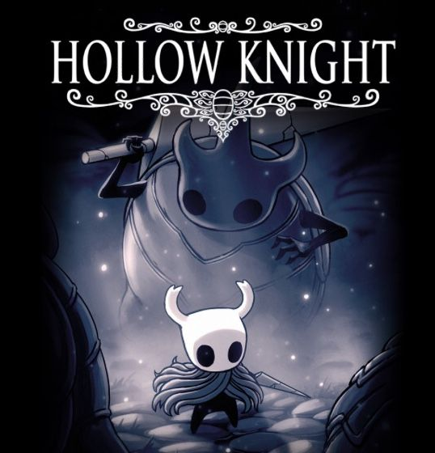
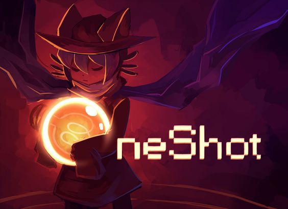
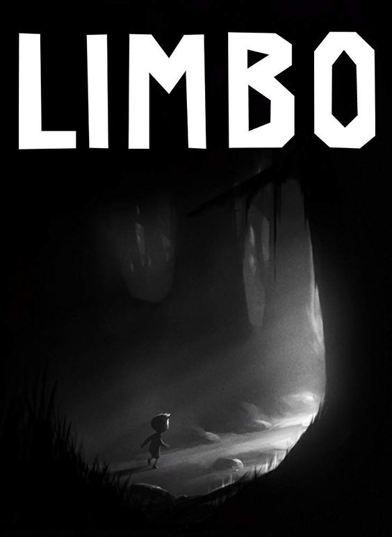
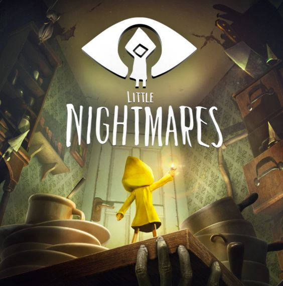
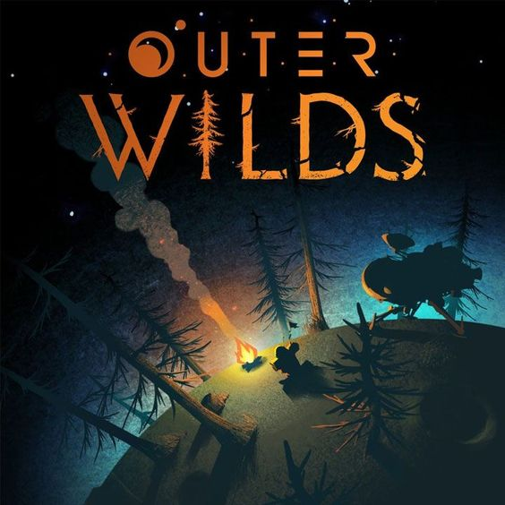

Indie

Desenvolvedor: Team Cherry
Lançamento: 24 de fevereiro de 2017
Plataformas: PC, Nintendo Switch, PlayStation 4, Xbox One
Gênero: Metroidvania, Ação e Aventura
"Hollow Knight" é um aclamado jogo indie que se passa no vasto e intrincado reino de Hallownest. O jogador assume o papel do Cavaleiro, uma pequena criatura que explora cavernas subterrâneas, enfrenta inimigos poderosos e descobre segredos antigos. Com um estilo visual desenhado à mão, a atmosfera sombria e a trilha sonora envolvente, "Hollow Knight" oferece uma experiência imersiva que combina combate preciso e exploração profunda. A jogabilidade é desafiadora, mas recompensadora, com uma narrativa rica contada através do ambiente e dos personagens encontrados ao longo do caminho.

Desenvolvedor: Little Cat Feet
Lançamento: 8 de dezembro de 2016
Plataformas: PC
Gênero: Aventura, Puzzle, RPG
"OneShot" é um jogo indie de aventura e quebra-cabeças que se destaca pela sua narrativa única e interativa. O jogador controla Niko, um jovem que acorda em um mundo misterioso e recebe a missão de restaurar o sol para salvar este universo decadente. O jogo é conhecido por sua quebra da quarta parede, onde ele interage diretamente com o jogador e cria uma conexão emocional profunda. Com uma história tocante, personagens memoráveis e uma jogabilidade que envolve a resolução de quebra-cabeças, "OneShot" é uma experiência única e comovente que desafia as expectativas dos jogadores.

Desenvolvedor: Playdead
Lançamento: 21 de julho de 2010
Plataformas: PC, PlayStation 4, Xbox One, Nintendo Switch, iOS, Android
Gênero: Puzzle, Plataforma
"Limbo" é um jogo indie de quebra-cabeça e plataforma que se tornou um clássico desde seu lançamento. Com um estilo visual minimalista em preto e branco, o jogo cria uma atmosfera de suspense e mistério. O jogador controla um menino que explora um mundo sombrio e hostil em busca de sua irmã. A jogabilidade é centrada na resolução de quebra-cabeças baseados em física, com perigos que surgem repentinamente. A simplicidade do design e a ausência de diálogo contribuem para uma experiência profundamente imersiva e perturbadora, fazendo de "Limbo" um marco nos jogos indie.

Desenvolvedor: Tarsier Studios
Lançamento: 28 de abril de 2017
Plataformas: PC, PlayStation 4, Xbox One, Nintendo Switch
Gênero: Puzzle, Plataforma, Horror
"Little Nightmares" é um jogo de terror e plataforma que mergulha os jogadores em um mundo de pesadelos. O jogador assume o controle de Six, uma pequena garota com uma capa de chuva amarela, que tenta escapar de The Maw, um misterioso e aterrorizante complexo submarino. O jogo é conhecido por sua atmosfera opressiva, design de criaturas perturbadoras e uma história que, embora contada de forma sutil, deixa uma marca duradoura. A jogabilidade combina elementos de furtividade e resolução de quebra-cabeças, criando uma experiência tensa e envolvente.

Desenvolvedor: Mobius Digital
Lançamento: 28 de maio de 2019
Plataformas: PC, PlayStation 4, Xbox One, Nintendo Switch
Gênero: Aventura, Exploração
"Outer Wilds" é um jogo de exploração e mistério que coloca o jogador em um sistema solar em constante mudança. O jogador assume o papel de um explorador espacial novato que descobre que está preso em um loop temporal, onde o sol explode a cada 22 minutos. O objetivo é desvendar os segredos do sistema solar antes que o tempo acabe, explorando planetas únicos, cada um com suas próprias paisagens e mistérios. "Outer Wilds" é elogiado por sua abordagem inovadora à narrativa, permitindo que os jogadores descubram a história através da exploração livre e curiosidade, sem orientações diretas.